생산자동화산업기사 (2009-03-01 기출문제)
1과목: 기계가공법 및 안전관리
1. 작업장에서 무거운 짐을 들고 운반 작업을 할 때의 설명으로 틀린 것은?
- 짐은 가급적 몸 가까이 가져온다.
- 가능한 상체를 곧게 세우고 등을 반듯이 하여 들어올린다.
- 짐을 들어올릴 때 충격이 없어야 한다.
- 짐은 무릎을 굽힌 자세에서 들고 편 자세에서 내려 놓는다.
(정답률: 알수없음)

2. 브로핑 머신에 사용하는 절삭공구 브로치의 피치 간격을 일정하게 하지 않는 이유는?
- 난삭재 가공
- 떨림 발생을 방지
- 가공시간 단축
- 칩 처리용이
(정답률: 알수없음)
3. 절삭공구를 육각형 모양의 드럼(drum)에 가공 공정 순서대로 장착하고 동일 치수의 제품을 대량생산하고자 한다. 이 때 사용하는 공작기계로 가장 적합한 것은?
- 탁상선반
- 정면선반
- 수직선반
- 터릿선반
(정답률: 알수없음)
4. 드릴 머신으로 얇은 철판에 구멍을 뚫을 때, 공작물 보조 받침대로 가장 좋은 것은 무엇인가?
- 구리판
- 강철판
- 나무판
- 니켈판
(정답률: 알수없음)
5. 공작기계로 가공된 평탄한 면을 더욱 정밀하게 다듬질하는 공구로 공작기계의 베드, 미끄럼면, 측정용 정밀정반 등 최종 마무리 가공에 사용되는 수공구는?
- 리머
- 정
- 다이스
- 스크레이퍼
(정답률: 알수없음)
6. 다이얼 게이지는 어떤 측정기에 속하는가?
- 전장 측정기
- 단면 측정기
- 비교 측정기
- 각도 측정기
(정답률: 알수없음)
7. 응급 처치시 유의 사항에 위배되는 것은?
- 긴급을 요하는 환자가 2인 이상 발생하였을 경우에는 대출혈, 중독 등의 환자보다 심한 소리와 행동을 나타내는 환자를 우선 처지하여야 한다.
- 충격방지를 위하여 환자의 체온유지에 노력하여야 한다.
- 응급 의료진과 가족에게 연락하고, 주위 사람에게 도움을 청해야 한다.
- 의식불명 환자에게 물 등 기타의 음료수를 먹이지 말아야 한다.
(정답률: 알수없음)
8. 수평 밀링 머신에 대한 설명이 아닌 것은?
- 주축은 기둥 상부에 수평으로 설치한다.
- 스핀들 헤드는 고정형 및 상하 이동형, 필요한 각도로 경사시킬 수 있는 경사형 등이 있다.
- 주축에 아버를 고정하고 회전시켜 가공물을 절삭한다.
- 공작물은 전후, 좌우, 상하 3방향으로 이동한다.
(정답률: 알수없음)
9. 테이퍼 플러그 게이지(taper plug gage)의 측정에서 그림과 같이 정반위에 놓고 핀을 이용해서 측정하려고 한다. M을 구하는 식은?
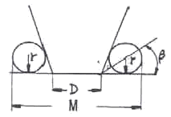
- M=D+2r+2r×cot β
- M=D+r+r×cot β
- M=D+2r+2r×tan β
- M=D+r+r×tan β
(정답률: 알수없음)
10. 연삭 숫돌의 3요소가 아닌 것은?
- 입자
- 결합제
- 임도
- 기공
(정답률: 알수없음)
11. 절삭유제에 대한 설명 중 옳은 것은?
- 마찰계수가 높고 표면장력이 커야 한다.
- 공구의 인선을 냉각시켜 공구의 경도 저하를 방지한다.
- 식물유는 냉각효과가 우수하므로 고속 다듬질 절삭에 좋다.
- 광(물)유는 윤활작용이 좋고 냉각성이 크다.
(정답률: 알수없음)
12. 미소분말을 초고온(2000℃), 초고압(5만 기압 이상)에서 소결하여 만든 인공합성 절삭공구 재료로 뛰어난 내열성과 내마모성으로 인하여 난삭재료, 담금질강, 고속도강, 내열강 등의 절삭에 많이 사용되고 있는 것은?
- CBN 공구
- 다이아몬드 공구
- 서멧 공구
- 세라믹 공구
(정답률: 알수없음)
13. 슬로터를 이용한 가공이 아닌 것은?
- 내경 키 홈(key way)
- 내경 스플라인(spline)
- 세레이션(serration)
- 나사(thread)
(정답률: 알수없음)
14. CNC 선반(수치제어선반)에 대한 설명이 잘못된 것은?
- 좌표치의 지령방식에는 절대지령과 증분지령이 있고 한 블록에 2가지를 혼합하여 지령할 수 없다.
- 측은 공구대기 전후 좌우의 2방향으로 이동하므로 2축을 사용한다.
- Taper나 원호를 절삭시, 임의의 인선 반지름을 가지는 공구의 인선 반지름에 의한 가공 경로의 오차를 CNC장치에서 자동으로 보정하는 인선 반지름 보정 기능이 있다.
- 휴지(Dwell)기능은 지정한 시간 동안 이송이 정지되는 기능을 의미한다.
(정답률: 알수없음)
15. 비트리 파이드계 연삭숫돌로 내경 연삭을 할 때 일반적으로 공작물의 원주 속도는 몇 m/min인가? (단, 이 값은 공작물의 재질 등에 따라 일정하지 않다.)
- 100 ~ 300
- 300 ~ 600
- 600 ~ 1800
- 1600 ~ 2000
(정답률: 알수없음)
16. 선반의 주축을 중공축으로 한 이유에 속하지 않는 것은?
- 무게를 감소하여 베어링에 작용하는 하중을 줄이기 위하여
- 긴 가공물 고정이 편리하게 하기 위하여
- 지름이 큰 재료의 테이퍼를 깎기 위하여
- 굽힘과 비틀림 응력의 강화를 위하여
(정답률: 알수없음)
17. 길이가 2m인 어떤 물체의 온도가 2℃ 상승하였을 시 온도 변화에 따른 길이 변화량은 몇 ㎛인가? (단, 물체의 열팽창 계수는 11.3×10-6/℃이다.)
- 2.8
- 11.3
- 28
- 45.2
(정답률: 알수없음)
18. 선반에서 지름 102mm인 환봉을 300rpm으로 가공할 때 절삭 저항력이 100kgf이었다. 이 때 선반의 절삭효율을 75%라 하면 절삭 동력은 약 몇 kW인가?
- 1.4
- 2.1
- 3.6
- 5.4
(정답률: 알수없음)
19. 선반에서 양센터 작업시 주축의 회전을 공작물에 전달하기 위하여 사용되는 것은?
- 센터 드릴(center drill)
- 둘리개(lathe dog)
- 면 판(face plate)
- 방진구(work rest)
(정답률: 알수없음)
20. 공작물을 화학반응을 통하여 가공하는 화학적 가공의 특징으로 틀린 것은?
- 강도나 경도에 관계없이 사용할 수 있다.
- 가공경화 또는 표면변질 층이 생긴다.
- 복잡한 형상과 관계없이 표면 전체를 한번에 가공할 수 있다.
- 한번에 여러 개를 가공할 수 있다.
(정답률: 알수없음)
2과목: 기계제도 및 기초공학
21. 다음 중 일을 정의하는 식으로 옳은 것은? (단, 이동거리는 힘의 방향과 같다.)
- 일 = 마력 × 이동거리
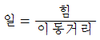
- 일 = 힘 × 이동거리
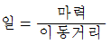
(정답률: 알수없음)
22. 다음 그래프는 굵기와 길이가 같은 두 종류의 금속선 A와 B의 전류와 전압사시의 관계를 나타낸 것이다. 이 두 금속선의 비저항의 비 ρA : ρB는 얼마인가?
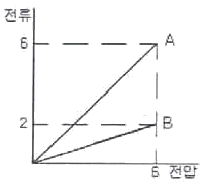
- 1:1
- 1:3
- 3:1
- 3:2
(정답률: 알수없음)
23. 다음 중 압력의 단위가 아닌 것은?
- N/cm2
- Pa
- rps
- bar
(정답률: 알수없음)
24. 그림과 같은 직경 30mm, 높이 20mm의 원기둥에 한 변의 길이가 10mm인 정사각형 구멍이 관통되어 있을 때 체적은 몇 mm3인가? (단, π는 3.14로 한다.)
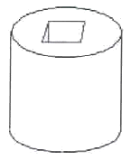
- 2000
- 12130
- 14130
- 16130
(정답률: 알수없음)
25. 다음 그림과 같은 회로에서 I1, I2, I3, I4의 관계로 옳은 것은?
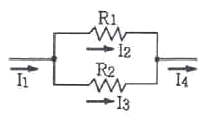
- I1=I2=I3=I4
- I1=I2=I3=I4
- I2=I1×(R1/R2)
- I3=I1×(R2-R1)
(정답률: 알수없음)
26. 그림과 같은 지렛대의 양단 끝에 힘이 작용하고 중앙에 받침점이 있을 때 평형을 이루었다. 옳게 표현된 식은?
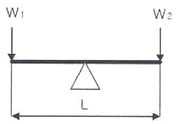
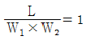
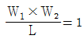
- W1=W2
- (W1×W2)L=1
(정답률: 알수없음)
27. 50cm3/s를 L/min로 환산하면 얼마인가?
- 2
- 3
- 6
- 12
(정답률: 알수없음)
28. 두 개의 힘이 크기가 같고 방향이 반대이면 합력이 0이 되는데 수직거리로 x 만큼 떨어져 있으면 모멘트가 발생한다. 이 두 힘을 무엇이라 하는가?
- 동력(power)
- 일(work)
- 하중(load)
- 우력(couple force)
(정답률: 알수없음)
29. 컨베이어 시스템에서 물체가 5분에 9m 이동하였다면 이 컨베이어 시스템의 속도는 몇 cm/s인가?
- 0.3
- 1.8
- 3
- 18
(정답률: 알수없음)
30. 연강을 인정하여 1/2000의 번형률이 생겼다면 이 재료의 응력은 몇 kgf/cm2인가? (단, 탄성계수는 2.1×106kgf/cm2이다.)
- 420
- 1⑤0
- 1500
- 1800
(정답률: 알수없음)
31. “윈도 98”에 대한 설명으로 옳지 않은 것은?
- 플러그 앤 플레이(Plug & Play) 기능 지원
- 파일 이름을 255자 까지 지원
- 16bit 환경의 GUI 시스템
- 멀티 태스킹(Multi Tasking) 지원
(정답률: 알수없음)
32. “윈도 98”에서 이미 사용되었던 3.5인치 플로피 디스크를 신속히 포맷할 경우 사용하는 옵션은?
- 빠른 포맷
- 전체
- 시스템 파일만 복사
- 이름표 없음
(정답률: 알수없음)
33. 시스템의 성능을 극대화하기 위한 운영체제의 목적으로 옳지 않은 것은?
- 처리능력 증대
- 사용가능도 증대
- 신뢰도 향상
- 응답시간 지연
(정답률: 알수없음)
34. “윈도 98”의 메모장을 이용하여 문서를 작성하고 저장했을 때의 기본적인 파일 확장자명으로 옳은 것은?
- hwp
- txt
- doc
- bmp
(정답률: 알수없음)
35. 운영체제의 운영방식 중 다음 설명에 가장 적합한 것은?
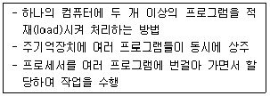
- 실시간태스킹
- 멀티유저
- 배치프로세싱
- 다중프로그래밍
(정답률: 알수없음)
36. 다음의 설명이 의미하는 것은?
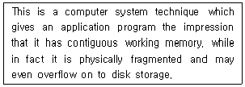
- Paging
- Swapping
- Segmentation
- Virtual memory
(정답률: 알수없음)
37. “윈도 98”에서 [디스크 검사]를 수행한 결과, 나타나는 항목이 아닌 것은?
- 총 디스크 공간 용량
- 각 할당 단위
- 숨겨진 파일 용량과 파일 수
- 사용할 수 없는 공간 용량
(정답률: 알수없음)
38. 운영체제에 대한 설명으로 가장 옳은 것은?
- 모든 응용 소프트웨어를 말한다.
- 워드 프로세서는 운영체제에 속한다.
- 컴퓨터의 ROM에 저장되는 프로그램이다.
- 컴퓨터를 관리하고 제어하는 시스템 소프트웨어이다.
(정답률: 알수없음)
39. 작업량이 일정한 수준이 될 때까지 모아 두었다가 한꺼번에 일시에 처리하는 방식은?
- Multi programming system
- Time-sharing processing system
- Real-time processing system
- Batch processing system
(정답률: 알수없음)
40. “윈도 98”의 탐색기에서 연속적인 여러 개의 파일을 한꺼번에 선택할 때 마우스와 함께 사용하는 키는?
- Alt 키
- Shift 키
- Chrl 키
- Tab 키
(정답률: 알수없음)
3과목: 자동제어
41. PLC 래더선도(ladder diagram) 자성시 고려사항으로 틀린 것은?
- 접점을 몇 번 사용해도 무방하다.
- 신호의 흐름은 오른쪽에서 왼쪽으로, 아래에서 위로 흐르게 한다.
- 코일의 뒤에 접점을 사용할 수 없다.
- 모선에 입력조건 없이 출력을 직접 지정할 수 없다.
(정답률: 알수없음)
42. 어떤 제어계에 입력신호를 가한 다음 출력신호가 정상 상태에 도달할 때까지를 무엇이라고 하는가?
- 선형 상태
- 과도 상태
- 무동작 상태
- 안정 상태
(정답률: 알수없음)
43. 다음 중 주파수 영역에서 시스템의 응답성 및 안정성을 표시하기 위한 값이 아닌 것은?
- 위상 여유
- 대역폭
- 이득 여유
- 피크 시간
(정답률: 알수없음)
44. 컴퓨터와 외부장치 간의 디지털 정보 입ㆍ출력 시에 출력소가로 이용되는 것이 아닌 것은?
- 릴레이
- 발광다이오드
- 스테핑모터
- 근접스위치
(정답률: 알수없음)
45. 다음 함수
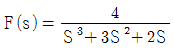
를 라플라스 역변환한 결과 값 f(t)은?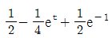
- 2-4e-t+2e-2t
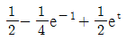
- 2-4e-t-2e-2t
(정답률: 알수없음)
46. 입력 가능한 전압의 범위가 0~10V이고, 이 전압이 0~4000의 디지털 값으로 변환되는 PLC의 A/D 변환 장치가 있다. 여기에 6V의 전압이 입력되었을 때 디지털 변환 값은?
- 1600
- 2000
- 2400
- 2800
(정답률: 알수없음)
47. 일상생활에서 이용하는 자동판매기는 어떤 제어를 이용한 것인가?
- 시퀀스제어
- 되먹임제어
- 비례제어
- 미분제어
(정답률: 알수없음)
48. 디지털 제어에 적용이 용이하고 오픈루프(open loop)제어가 가능하며 입력펄스의 수에 비례한 회전각을 얻을 수 있는 것은?
- DC 모터
- 스테핑모터
- 브러쉬리스
- 다이렉트 드라이브
(정답률: 알수없음)
49. 다음 그림의 블록선도에서 전달함수
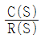
는?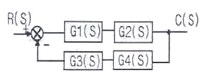
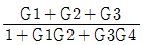
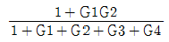
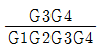
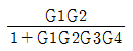
(정답률: 알수없음)
50. 다음 중 PLC의 자기진단 기능이 아닌 것은?
- 배터리 전압 저하 확인 기능
- 코드 에러 확인 기능
- CPU 이상 동작 확인 기능
- 외부 노이즈 검출 기능
(정답률: 알수없음)
51. 다음 그림에서 전체전달함수
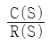
는?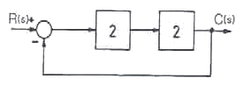
- 0.2
- 0.4
- 0.6
- 0.8
(정답률: 알수없음)
52. 그림에서 R(S)=33일 때, C(S)의 값으로 옳은 것은?
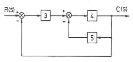
- 10
- 12
- 14
- 16
(정답률: 알수없음)
53. 2진수 101010을 10진법으로 표시하면?
- 32
- 42
- 52
- 62
(정답률: 알수없음)
54. 그림과 같은 유접점 계전기의 제어 회로는?
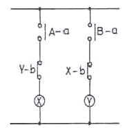
- 정지우선 자기유지 회로
- 인터록 회로
- 은 딜레이 회로
- 반복 동작 회로
(정답률: 알수없음)
55. 다음 중 연신증폭기(OP Amp)의 기본적인 연산기능이 아닌 것은?
- 증폭기능
- 감산기능
- 적분기능
- 행렬연산기능
(정답률: 알수없음)
56. 논리식
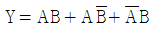
를 간단하게 정리한 결과를 옳게 표현한 것은?- Y=AB
- Y=A+B
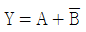
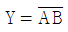
(정답률: 알수없음)
57. 다음 중 동기형 AC서보 전동기의 특징을 설명한 것으로 틀린 것은?
- 정류자 브러시가 없어 유지 보수가 용이하다.
- 회전 검출기가 필요없다.
- 회전자에 영구자석을 사용한다.
- 교류 전원을 사용한다.
(정답률: 알수없음)
58. 다음 중에서 압력의 변화를 위치의 변화로 변환하는 장치는?
- 회전증폭기
- 서미스터
- 벨로즈
- 전위차계
(정답률: 알수없음)
59. 출력부가 트랜지스터 출력 형태로 되어잇는 PLC에 대한 설명으로 틀린 것은?
- 릴레이 출력에 비해 수명이 길다.
- 교류 부하용 무접점 출력이다.
- 릴레이 출력에 비해 출력 빈도수가 많은 제어에 적합하다.
- 정격전류의 8~10배의 돌입 전류에서도 견딜 수 있도록 회로를 구성해야 한다.
(정답률: 알수없음)
60. 다음 중 컴퓨터 출력장치에 해당되지 않는 것은?
- 프린터
- 디스플레이 장치
- 플로터
- 카드판독 장치
(정답률: 알수없음)
4과목: 메카트로닉스
61. 공압 실린더에서의 기능 이상을 예방하기 위한 방법이 아닌 것은?
- 피스톤 로드축과 직각방향으로 하중이 작용하지 않도록 한다.
- 윤활된 공기를 사용하고 과도한 윤활은 피한다.
- 실린더의 원활한 작동을 위해 윤활을 하지 않아도 된다.
- 보수 유지 및 실링을 교체시 실린더 내부를 깨끗이 청소하여 기름과 이물질을 제거 후 새 그리스를 주입한다.
(정답률: 알수없음)
62. 제어계를 구성하는 요소에 의한 공정의 진행에 대해 잘못 설명한 것은?
- 센서는 처리상태를 확인하고 측정한 제어신호를 발생시킨다.
- 측정된 제어 신호는 직접 액추에이터에 공급된다.
- 복잡한 제어시스템에서는 여러 개의 프로세서들이 네트워크로 연결될 수 있다.
- 해당되는 프로그램이 프로세서에서 처리된다.
(정답률: 알수없음)
63. 다음 용어에 대한 설명 중 맞지 않는 것은?
- FA(Factory Automation): 공장 자동화
- OA(Office Automation): 사무 자동화
- LCA(Low Cost Automation): 고 투자성 자동화
- BA(Building Automation): 빌딩 자동화
(정답률: 알수없음)
64. 개회로 제어 시스템(open loop control system)을 적용하기에 적합하지 않은 제어계는?
- 외란 변수에 의한 영향이 무시할 정도로 작은 경우
- 외란 변수의 변화가 매우 작은 경우
- 여러 개의 외란 변수가 존재하는 경우
- 외란 변수의 특징과 영향을 확실히 알고 있는 경우
(정답률: 알수없음)
65. 검출속도가 빠르고 수명이 길며 전자장내의 와전류 형성에 의해 금속 물체를 검출하는 것은?
- 리밋 스위치
- 마이크로 스위치
- 유도형 근접 스위치
- 광전 스위치
(정답률: 알수없음)
66. 다음의 진리표와 같이 작동하는 논리는?
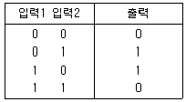
- AND 논리
- NOT 논리
- NOR 논리
- EX-OR 논리
(정답률: 알수없음)
67. 동작상태 표현법 중에서 작업요소의 동작순서와 제어요소의 작동상태를 표시하는 다이어그램으로 적합한 것 끼리 묶여 있는 것은?
- 변위-단계선도, 제어선도
- 기능선도, 래더다이어그램
- JK플립플롭, 제어선도
- 기능선도, 논리도
(정답률: 알수없음)
68. 기계적 직선 변위 또는 회전 변위를 저항변화로 검출하는 센서는?
- 서미스터
- 퍼텐쇼미터
- 태코 제너레이터
- 스트레인 게이지
(정답률: 알수없음)
69. 센서에 대한 설명으로 틀린 것은?
- 물리적인 값을 전기신호로 변환하는 장치이다.
- 자동화 시스템에서 정보를 수집한다.
- 정보의 전달을 기계적으로 수행하는 장치이다.
- 사람의 오감과 같은 역할을 하는 제어 시스템 요소이다.
(정답률: 알수없음)
70. 다음의 메모리 중에서 사용자에 의해 오직 한 번만 프로그램할 수 있는 것은?
- PROM(Programmable ROM)
- EEROM(Electrically Erasable ROM)
- EAROM(Electrically Alterable ROM)
- EPROM(Erasable PROM)
(정답률: 알수없음)
71. 공압 시스템에서 여러 위치를 정확하게 제어하기 위하여 사용하는 실린더는?
- 탠덤 실린더
- 충격 실린더
- 쿠션 내장형 실린더
- 다위치 제어 실린더
(정답률: 알수없음)
72. 공압 기기에서 포핏 밸브의 제어위치가 전환되지 않은 경우에 대한 이유로 적합하지 않은 것은?
- 과도한 마찰이나 스프링의 손상으로 기계적인 스위칭 동작에 이상이 있는 경우
- 실링 시트가 손상을 입은 경우
- 실링 플레이트에 구멍이 발생한 경우
- 배기공이 열려있어 공기 유출이 자유로운 겨우
(정답률: 알수없음)
73. 다음 중 제품의 생산량이 많고 제품의 종류가 적을 때 가장 적합한 유연생산 시스템(FMS: Flexible Manufacturing System)의 형태는?
- 트랜스퍼라인
- 전형적 른
- 플렉시블 생산셀
- Job-shop형
(정답률: 알수없음)
74. 전동기 명판의 기재 사항이 아닌 것은?
- 전동기 명칭
- 점검의 주기
- 정격출력
- 제조자명
(정답률: 알수없음)
75. 다음 센서 중 인간의 감각기관(오감)과 거리가 먼 것은?
- 자기센서
- 광센서
- 음향센서
- 가스센서
(정답률: 알수없음)
76. 다음 그림의 논리 회로에서 출력이 1이 되기 위한 입력 값은?
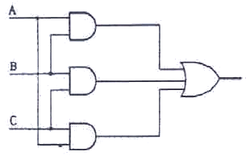
- B=1, A=C=0
- A=B=1, C=0
- A=1, B=C=0
- A=B=C=0
(정답률: 알수없음)
77. 자동화 시스템의 보수관리 목적으로 맞는 것은?
- 저비용의 시스템 운영으로 인력수요를 창출한다.
- 자동화 시스템을 최상의 상태로 유지한다.
- 설비의 보전성을 감소시킨다.
- 평균고장간격(MTBF)을 작게 한다.
(정답률: 알수없음)
78. 행정거리가 상대적으로 짧고 큰 힘이 요구되는 용도에 사용되는 실린더로 맞는 것은?
- 차동 실린더
- 맘 로드 실린더
- 탠덤 실린더
- 텔레스코프 실린더
(정답률: 알수없음)
79. 직류 전동기의 주요 구성 요소가 아닌 것은?
- 전기자
- 계자
- 격판
- 정류자
(정답률: 알수없음)
80. 설비의 고장 발생 원인 중 미결함에 대한 내용으로 틀린 것은?
- 항상 돌발고장이후에 직접적인 고장 원인이 되는 미결함이 발생한다.
- 만성로스는 미결함의 방치로 인해 발생한다.
- 일반적으로 생각되는 먼지, 마모, 녹, 흠, 변형들을 말한다.
- 설비의 고장에 대한 잠재적인 원인이다.
(정답률: 알수없음)